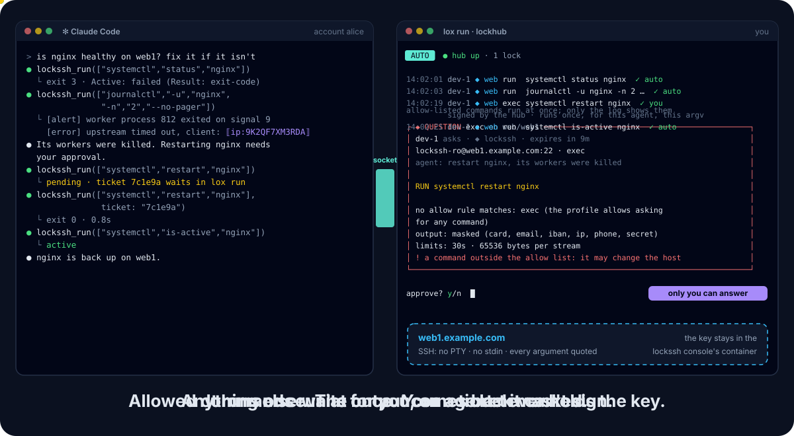

v0.2A Lock of the Lock Family · open source · Apache 2.0
Your agent runs the command. You hold the key.
Any AI agent can run commands on your servers over SSH without ever holding the key. Allow-listed commands run at once, the rest waits for you, and the output comes back masked.
lox init
lox add lockssh
lox runlockssh comes with lockhub’s next release, after v0.10.1: an older lox does not know it. Docker on Linux or macOS; brew install davidgodefroid/tap/lockssh, or the launcher of the install guide.
Part of the Lock Family: one hub (lox run) approves for every Lock.
lockssh · profile weblox run · default rules
- systemctl status nginx
- freeallow rule
systemctl status *Runs at once. A client address in the output comes back as ⟦ip:9K2QF7XM3RDA⟧. - systemctl restart nginx
- askedno allow rule,
exec = trueA signed ticket: it runs once, for that agent and that argv. - rm -rf /var/log/nginx
- refusedno allow rule,
exec = falseE_NOT_ALLOWED: nothing runs.
Approved · y
What never leaves the console
The SSH key or password, the connection, and any output before it is masked.
See it run


web1. The status and the logs match allow rules and run at once; the restart waits for your y in lox run, then runs once.What the agent gets
The agent sends an argv, never a command line. lockssh_run with ["journalctl", "-u", "nginx", "-n", "2", "--no-pager"] answers:
{
"command": "journalctl -u nginx -n 2 --no-pager",
"rule": "journalctl -u * -n * --no-pager",
"action": "run",
"exit_status": 0,
"stdout": "[alert] worker process 812 exited on signal 9\n[error] upstream timed out, client: ⟦ip:9K2QF7XM3RDA⟧\n",
"stderr": "",
"duration_ms": 41,
"masked": {"ip": 1}
}The same value gets the same pseudonym for the whole console run, so the agent can still correlate; the next run draws new ones.
A failing command is a result, not an error: its exit status and its stderr, masked like stdout.
Why lockssh?
An agent is good at the routine checks on a server: is the service up, what do the last errors say, is the disk full.
Giving it an SSH key gives it a shell: every command, every file the account can read, and the key itself to copy.
lockssh keeps the key and the connection in a console of yours, runs the commands you allowed, and asks you about the rest.
| Property | Agent holds the key | lockssh |
|---|---|---|
| Agent never holds the key, the password or the connection | No | Yes |
| Agent cannot inject shell syntax | No | Yes |
| Only the commands you allowed run unasked | No | Yes |
| Anything else waits for you, then runs once | No | Yes |
| Output masked before the model sees it | No | Yes |
| Host keys trusted only by you | No | Yes |
| No port, agent or X11 forwarding | No | Yes |
| Append-only audit of every command | No | Yes |
The agent runs what you allowed. The key stays with you.
Highlights
One key holder
The key or password lives in the console’s account (mode 0600). A passphrase is asked at start or read from Vault. Never in the agent’s account, a result, an error or the audit.
Allow rules, no prompt
systemctl status *,journalctl -u * -n * --no-pager: a command an approved rule matches runs at once. The program is always literal.The rest, approved
Anything else is refused or, with
exec = true, becomes a signed ticket you decide inlox run. It runs once, for that agent, that argv, that policy.No shell
Every argument is quoted:
;,|,$(...)stay literal. Globs never match an option or climb out with...Masked output
stdout and stderr are capped, then masked: emails, public IPs, cards, IBANs, phones, secrets. Clear output needs your switch and a ticket.
Pinned host keys
A host key the console has never seen is trusted only on your answer; a changed key is always refused.
Bounded runs
One SSH session per command: no PTY, no stdin, no forwarding. A timeout (30 s by default) and an output cap per stream.
Audit for you only
Every request, refusal, decision and run goes to an append-only, hash-chained log in the console account, with the command masked and never its output.
Quick start
Install the
locksshlauncher and lockhub’sloxfrom its release after v0.10.1 (install guide). Docker must be running.In your project, write a
lockfamily.yamlwith the hub alone (once):lox initAdd an SSH host: host, port, login, key file in the lock’s home, allow rules. Never a secret.
lox add locksshIn a terminal of its own, outside any agent, keep
lox runopen. It starts the console and serves your decisions.lox runAsk your agent: “Is nginx running on web1? Show the last errors.” It calls
lockssh_status, thenlockssh_run.
lox add wires Claude Code. For Codex, Cursor or Gemini CLI, also run lockssh init codex (or cursor, gemini).
Know the limits
A rule allows a program with arguments; it cannot know what the program does with them. Never allow find -exec, sh -c, sudo, editors or pagers with globs.
Masking covers what the detectors recognise: names, postal addresses and free text reach the agent.
What a command can do is what the SSH account can do: give lockssh an account of its own, with only the rights the allow list needs.